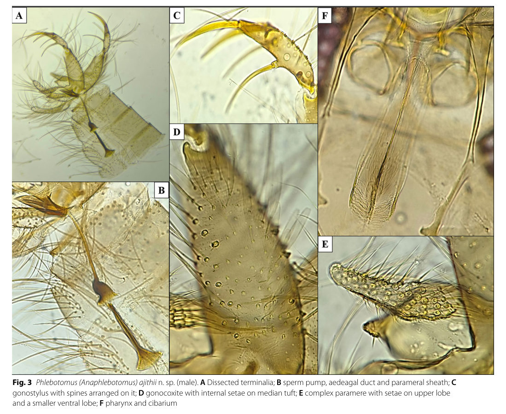

Species › Phlebotomus › Anaphlebotomus
Phlebotomus ajithii
| Classification | Genus Phlebotomus, subgenus Anaphlebotomus |
|---|---|
| Status | valid |
| Distribution | India: Kerala (Western Ghats). Type locality: cattle sheds and adjacent rooms of the Kadaar tribal settlement, Mullurkara (Thalapilly taluk), Thrissur district, 10.69 N 76.25 E, 103 m. Also caught in the same habitat in other surveyed Kerala districts; paratype males from Ottamala, Kasaragod district (Shah et al. 2024). |
| Importance | No Leishmania kDNA detected by real-time PCR in the specimens tested (Shah et al. 2024). |
| Diagnostic notes | ♀: labrum about 268 µm (250-280); hypopharynx with about 18 teeth on each side; maxilla with 15-18 internal and 9-11 external teeth; ascoid on f2 about 68 µm; cibarium with 4-5 irregular horizontal teeth, no pigment patch; pharynx 189 x 74 µm with a small group of minute spicules; spermatheca tubular, 13-15 segments, 39 x 16 µm, apical segment not enlarged; individual ducts 585-780 µm (15-20 times spermatheca length), highly coiled, striated; common duct short (54 µm). ♂: labrum about 183 µm; gonostyle 150 µm with four thick spines (one apical, two subapical or subterminal, one basal); gonocoxite 203 µm with median tuft of 48-50 setae; paramere with two lobes, the upper lobe 148 µm with about 60 setae, a shorter ventral process without setae; parameral sheath 102 µm, finger-like; sperm pump 204 µm; aedeagal ducts 175 µm, smooth; ejaculatory apodeme 152 µm. Compared species (values as given by Shah et al. 2024): P. colabaensis (♀ labrum about 300 µm, maxilla 11 lateral and 23 ventral teeth, ascoid f2 about 60 µm, spermatheca carrot-shaped, individual duct 4-5 times spermatheca), P. stantoni (♀ labrum 230-260 µm, ascoid f2 about 80 µm, spermatheca spindle-shaped, duct slightly longer than spermatheca, common duct very long; ♂ gonostyle 77 µm, sperm pump 143 µm, 43 gonocoxal setae) and P. shadenae (♀ labrum 187 µm, individual duct 69 µm; ♂ gonostyle 84 µm, 56 gonocoxal setae). COI distance 16.7% to P. colabaensis and 17.7% to P. stantoni. Not in any printed key: both sexes run to P. colabaensis in Lewis 1978 (couplets 26a, 28a). |
| Sources | Shah et al. 2024 |
⚠ Conflicting characters
| Character | Source A | Source B | Type | Comment |
|---|---|---|---|---|
| Position of the four gonostyle spines (♂) | Lewis 1978: 24a: one terminal, one subterminal, and two near the middle | Shah et al. 2024: P. ajithii: one apical, two subapical or subterminal and one basal; P. colabaensis: 'two being apical and subapical and one basal' | different interpretation | Shah et al. 2024 still place P. ajithii in Anaphlebotomus (style with four long spines). Compare shah2024:Fig3 before relying on spine positions at couplet 24. |
How it keys out
This taxon is not reached by any key in this collection (described or recognised later). Use the diagnostic notes and the original description.
The chain of characters leading to this taxon in each key (a ready-made diagnosis).
Figures


